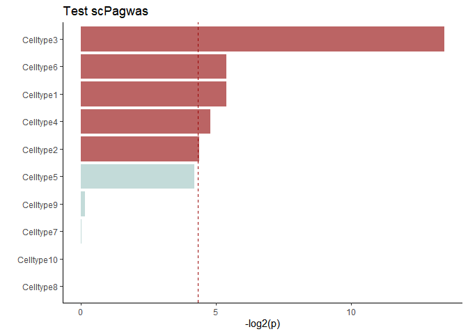
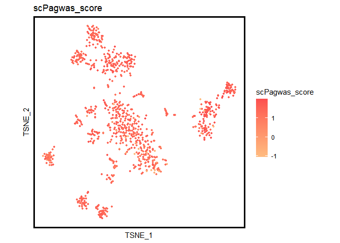
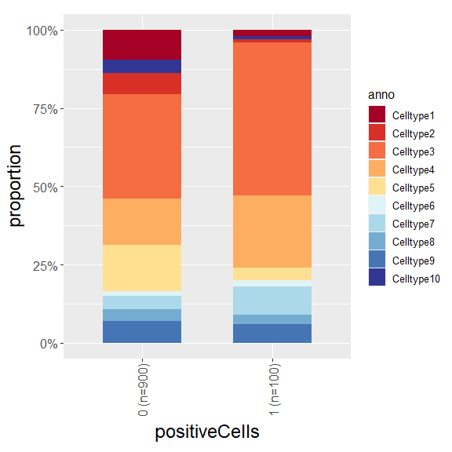
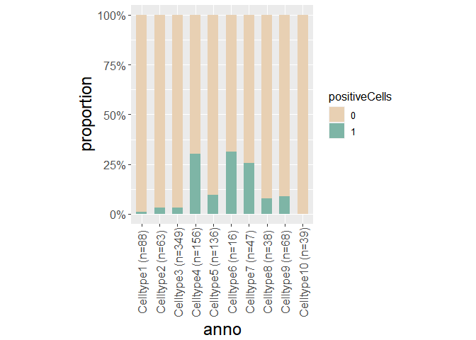
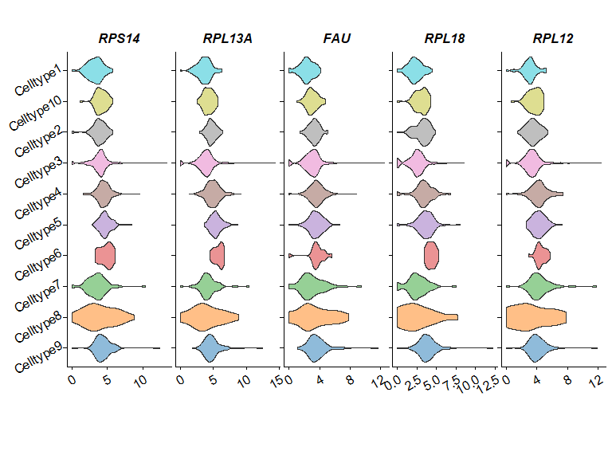
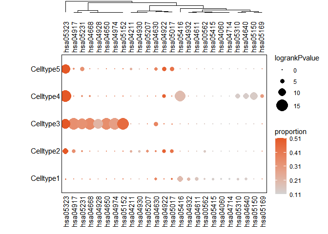
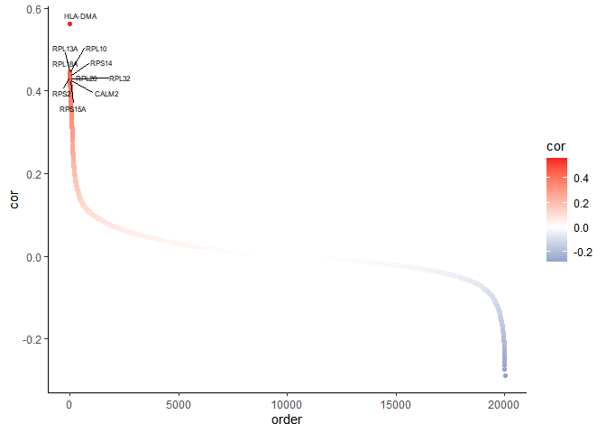

scPagwas, a polygenic principal component-scoring method that links scRNA-seq data with large-scale GWAS summary statistics to prioritize genetics-modulated cells associated with complex diseases. scPagwas is able to prioritize disease-associated individual cells by integrating the scRNA-seq data with polygenic signals from GWAS.

Graphical abstract
Installation
You can install the released version of scPagwas from github with:
devtools::install_github("dengchunyu/scPagwas")Example
1.Preprogress and create internal storage
library(scPagwas)
library(ggplot2)
suppressMessages(library(Seurat))
suppressMessages(library("dplyr"))
#Input pathway gene list, you can construct with youself.
data(Genes_by_pathway_kegg)
#gene annotation files.
data(block_annotation)
#LD data
data(chrom_ld)
#1.start to run the wrapper functions for preprogress.
Pagwas_data<-scPagwas_main(Pagwas = NULL,
gwas_data =system.file("extdata", "GWAS_summ_example.txt", package = "scPagwas"),
Single_data =system.file("extdata", "scRNAexample.rds", package = "scPagwas"),
output.prefix="test",
output.dirs="scPagwastest_output",
block_annotation = block_annotation,
assay="RNA",
Pathway_list=Genes_by_pathway_kegg,
chrom_ld = chrom_ld,
singlecell=T,
seruat_return=T,
celltype=T,
ncores = 1)Visualize the celltypes results.
1.barplot
Bootstrap_P_Barplot(p_results=Pagwas_data@misc$bootstrap_results$bp_value[-1],
p_names=rownames(Pagwas_data@misc$bootstrap_results)[-1],
figurenames = NULL,
width = 5,
height = 7,
do_plot=T,
title = "Test scPagwas")
Visualize the scPagwas_main results.
Visualize the scPagwas_score of single cell data in UMAP or TSNE plot.
require("RColorBrewer")
require("Seurat")
require("SeuratObject")
require("ggsci")
#check the objects
DimPlot(Pagwas_data,group.by = "anno",pt.size=1,reduction="umap",label = T, repel=TRUE)+
umap_theme()+ggtitle("Test")+labs(x="TSNE",y="")+theme(aspect.ratio=1)
scPagwas_Visualization(Single_data=Pagwas_data,
p_thre = 0.05,
FigureType = "umap",
width = 7,
height = 7,
lowColor = "white",
highColor = "red",
output.dirs="scPagwastest_output",
size = 0.5,
do_plot = T)


Plot the barplot of the proportion of positive Cells in celltypes
library("RColorBrewer")
library("ggplot2")
plot_bar_positie_nagtive(seurat_obj=Pagwas_data,
var_ident="positiveCells",
var_group="anno",
p_thre = 0.01,
vec_group_colors=NULL,
f_color=colorRampPalette(brewer.pal(n=10, name="RdYlBu")),
do_plot = T)
Plot the barplot of the proportion of celltypes in positive Cell
plot_bar_positie_nagtive(seurat_obj=Pagwas_data,
var_ident="anno",
var_group="positiveCells",
vec_group_colors=c("#E8D0B3","#7EB5A6"),
do_plot = T)
Plot the top5 heritability correlation genes in celltypes
top5genes<-rownames(Pagwas_data@misc$gene_heritability_correlation)[order(Pagwas_data@misc$gene_heritability_correlation,decreasing = T)[1:5]]
plot_vln_Corgenes(seurat_obj=Pagwas_data,
assay="RNA", slot="data",
var_group="anno",
vec_features=top5genes,
vec_group_colors= pal_d3(alpha =0.5)(10),
do_plot = T
)
Plot the heritability correlated Pathways for each celltypes
library(tidyverse)
library("rhdf5")
library(ggplot2)
library(grDevices)
library(stats)
library(FactoMineR)
library(scales)
library(reshape2)
library(ggdendro)
library(grImport2)
library(gridExtra)
library(grid)
library(sisal)
source(system.file("extdata", "plot_scpathway_contri_dot.R", package = "scPagwas"))
plot_scpathway_dot(Pagwas=Pagwas_data,
celltypes=unique(Idents(Pagwas_data))[1:5],
topn_path_celltype=5,
filter_p=0.05,
max_logp=15,
display_max_sizes=F,
size_var ="logrankPvalue" ,
col_var="proportion",
shape.scale = 8,
cols.use=c("lightgrey", "#E45826"),
dend_x_var = "logrankPvalue",
dist_method="euclidean",
hclust_method="ward.D",
do_plot = T,
figurenames = NULL,
width = 7,
height = 7)
Plot the heritability correlated genes
heritability_cor_scatterplot(gene_heri_cor=Pagwas_data@misc$gene_heritability_correlation,
topn_genes_label=10,
color_low="#035397",
color_high ="#F32424",
color_mid = "white",
text_size=2,
do_plot=T,
max.overlaps =20,
width = 7,
height = 7)